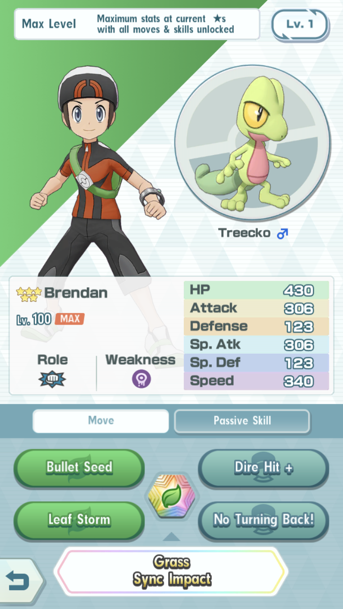
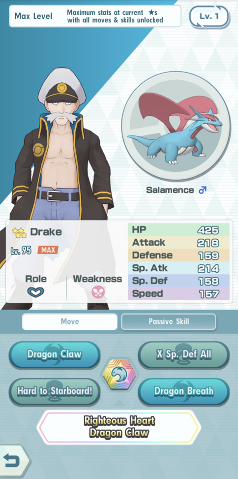
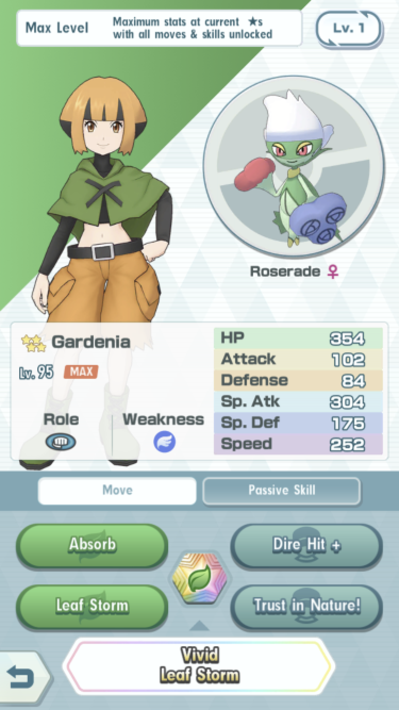
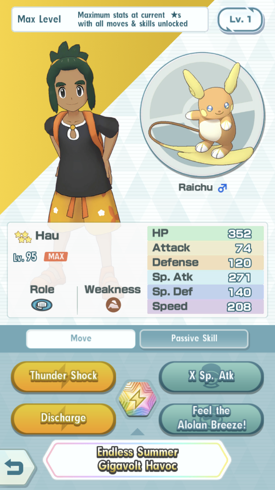

Yourself, Pikachu
Moves:Thunder Shock (costs 1 move gauge) is an electric type Sp. Atk move that has 20 power with 100 accuracy and it hits a single target. Very small chance to leave the target paralyzed.
Thunderbolt (costs 2 move gauge) is an electric Sp. Atk move that has 56 power with 100 accuracy and it hits a single target. very small chance to leave the target paralyzed.
Potion (2 uses per battle) restores a bit of an allies hp.
Jump Start! (2 uses per battle) Sharply raises the Sp. Atk and raises the speed of this character.
Thunder of Newfound Passion (Sync move) is an electric Sp. Atk move that has 300 power and it hits a single target.
Passive(s):Endurance: If the Pokemon enters battle with full HP, allows it to endure a single overwhelming attack with 1 HP left.
Brock, Onix
Moves:Rock Throw (costs 1 move gauge) is a rock type attack move that has 27 power with 90 accuracy and it hits a single target.
Rock Tomb (costs 2 move gauge) is a rock type attack move that has 46 power with 95 accuracy and it hits a single target. Lowers the target's speed.
Potion (2 uses per battle) restores a bit of an allies hp.
Rock-Hard Determination! (2 uses per battle) sharply raises the character's attack and defense.
Rock-Solid Rockslide (Sync move) is a rock type attack that has 240 power and it hits a single target. The more the opponent's speed is lowered, the greater the power of this move.
Passive(s):Stoic 2: Occasionally raises the Pokemon's Defense after it uses a move.
Sygna Suit Brock, Tyranitar
Moves:Rock Tomb (costs 2 move gauge) is a rock type attack move that has 46 power with 95 accuracy and it hits a single target. It lowers the target's speed.
Rock Slide (costs 3 move gauge) is a rock type attack move that has 126 power with 90 accuracy and it hits all opponents.
X Attack (2 uses per battle) sharply raises the character's attack.
Rock-Solid Finisher! (2 uses per battle) raises the character's defense. It also makes the character's next attack a sure hit and a critical hit.
Sygnature Rock-Solid Stone Edge (Sync move) is a rock type attack move that has 300 power and it hits a single target.
Passive(s):Sand Fortress: Stats cannot be lowered in a sandstorm.
Misty, Starmie
 Moves:
Moves:
Bubble Beam (costs 2 move gauge) is a water type Sp. Atk move that has 58 power with 100 accuracy and it hits a single target. Very small chance to lower the target's speed.
Hydro Pump (costs 3 move gauge) is a water type Sp. Atk move that ahs 150 power with 80 accuracy and it hits a single target.
X Sp. Def All (2 uses per battle) sharply raises Sp. Def of all allies.
Catch Us If You Can! (2 uses per battle) sharply raises an ally's evasiveness, also makes an ally gradually heal itself.
Tombotish Mermaid Bubble Beam (Sync move) is a water type Sp. Atk move that has 240 power and it hits a single target. The higher the character's Sp. Def has been raised, the greater the power of this move.
Passive(s):Healing Hand 2: Occasionally removes all status conditions of all allied sync pairs after the Pokemon uses a move.
Surge, Voltorb
Moves:Thunderbolt (costs 2 move gauge) is an electric Sp. Atk move that has 56 power with 100 accuracy and it hits a single target. Very small chance to leave the target paralyzed.
Eerie Impulse (costs 2 move gauge) sharply lowers the target's Sp. Atk with 100 accuracy and it hits a single target.
X Speed (2 uses per battle) sharply raises the character's speed.
A Surge of Power! (2 uses per battle) sharply raises the character's Sp. Atk and evasiveness.
Electric Sync Beam (Sync move) is an electric type Sp. Atk move that has 240 power and it hits a single target.
Passive(s):Last Word: The Pokemon uses Explosion immediately before fainting.
Erika, Vileplume
Moves:Energy Ball (costs 2 move gauge) is a grass type Sp. Atk move that has 58 power with 100 accuracy and it hits a single target. Very small chance of lowering the target's Sp. Def.
Stun Spore (costs 2 move gauge) leaves the target paralyzed with 90 accuracy and it hits a single target.
X Sp. Def (2 uses per battle) sharply raises the character's Sp. Def.
Pour It On! (2 uses per battle) raises the character's Sp. Atk and drastically raises the character's Defense.
Nature-Loving Petal Dance (Sync move) is a grass type Sp. Atk move that has 240 power and it hits a single target. Its power increases if the target is paralyzed.
Passive(s):Piercing Gaze: Moves never miss.
Blaine, Ponyta
Moves:Flame Wheel (costs 2 move gauge) is a fire type attack move that has 50 power with 100 accuracy and it hits a single target. Unfreezes the character and also has a very small chance of leaving the target burned.
Fire Spin (costs 2 move gauge) is a fire type Sp. Atk move that has 45 power with 85 accuracy and it hits a single target. Leaves the target trapped.
Sunny day (costs 2 move gauge and 2 uses per battle) makes the weather sunny.
Raging Inferno! (2 uses per battle) Drastically raises the ’s Attack. Sharply raises either the character’s Defense, Sp. Atk, Sp. Def, or Speed.
Fire Sync Move (Sync move) is a fire type attack move that has 240 power and it hits a single target.
Passive(s)Hostille Environment 1: Raises the chance of inflicting status conditions with the additional effects of moves.
Lorelei, Lapras
Moves:Ice Beam (costs 2 move gauge) is an ice type Sp. Atk move that has 55 power with 100 accuracy and it hits a single target. Very small chance of leaving the target frozen.
Blizzard (costs 3 move gauge) is an ice type Sp. Atk move that has 151 power with 70 accuracy and it hits all opponents. Very small chance of leaving the target frozen and it never misses during a hailstorm.
X Speed (2 uses per battle) sharply raises the character's speed.
Brace Yourself! (2 uses per battle) the lower the character's HP, the more this move raises the character's Defense. It also makes the character gradually heal itself.
Freezing Terror Blizzard (Sync move) is an ice type Sp. Atk move that has 240 power and it hits a single target. Its power increases if the target is frozen.
Passive(s):Hostille Environment 1: Raises the chance of inflicting status conditions with the additional effects of moves.
Bruno, Machamp
Moves:Karate Chop (costs 1 move gauge) is a fighting type attack move that has 19 power with 100 accuracy and it hits a single target. This move lands critical hits more easily.
Cross Chop (costs 3 move gauge) is a fighting type attack move that has 120 power with 80 accuracy and it hits a single target. This move lands critical hits more easily.
Dire Hit+ (2 uses per battle) sharply raises the character's critical-hit rate.
Hoo hah! (2 uses per battle) sharpply raises the character's Attack and Sp. Def.
Trained-to-the-Max Dynamic Punch (Sync move) is a fighting type attack move that has 300 power and it hits a single target.
Passive(s):Critical Strike 2: Powers up attacks if they become critical hits.
Agatha, Gengar
Moves:Lick (costs 1 move gauge) is a ghost type attack move that has 14 power with 100 accuracy and it hits a single target. It has a moderate chance of leaving the target paralyzed.
Shadow Ball (costs 3 move gauge) is a ghost type Sp. Atk move that has 118 power with 100 accuracy and it hits a single target. It has a small chance of lowering the target's Sp. Def.
Hypnosis (costs 2 move gauge) puts the target to sleep with 100 accuracy.
Run Along Now! (2 uses per battle) radically raises the character's speed. The character takes damage (25%) based on its max HP.
Tried-and-True Hex (Sync move) is a ghost type attack move that has 192 power and it hits a single target. Becomes Mega Gengar until the end of battle.
(Mega Gengar's move) Hex (replaced Lick)(costs 2 move gauge) is a ghost type Sp. Atk move that has 45 power with 100 accuracy and it hits a single target. Its power is doubled if the target is affected by a status condition.
Passive(s):Wide Awake: Prevents the Pokemon from falling asleep.
Kris, Totodile
Moves:Waterfall (costs 2 move gauge) is a water type attack move that has 54 power with 100 accuracy and it hits a single target. It has a small chance of making the target flinch.
Mega Kick (costs 3 move gauge) is a normal type (if you have the passive "Water Shift", it would become a water type move) attack move that has 200 power with 75 accuracy and it hits a single target.
X Attack (2 uses per battle) sharply raises the character's attack.
Pick Up the Pace! (2 uses per battle) sharply raises the character's speed. Makes the character's next attack a sure hit and a critical hit.
Water Sync Impact (Sync move)(for Totodile & Croconaw) and Crystalline Aqua Tail (for Feraligatr) is a water type attack move that has 240 power (if Water Sync Imapct), 300 power (if Crystalline Aqua Tail) and it hits a single target.
Passive(s):Endurance: If the Pokemon enters battle with full HP, allows it to endure a single overwhelming attack with 1 HP left.
Water Shift: Normal-type moves become Water-type moves.
Bugsy, Beedrill
Moves:Fell Stinger (costs 2 move gauge) is a bug type attack move that has 52 power with 100 accuracy and it hits a single target. It drastically raises the character's attack when it knocks out a target with this move.
Twineedle (costs 2 move gauge) is a bug type attack move that has 24 power (x2 hits) with 100 accuracy and it hits a single target. Small chance of leaving the target paralyzed.
Sure Crit (2 uses per battle) ensures that the characer's next attack will be a critical hit.
Beehold My Research! (2 uses per battle) raises the character's speed and drastically raises the character's evasiveness.
Bug Expert Twineedle (Sync move) is a bug type attack move that has 192 power and it hits a single target. Becomes Mega Beedrill until the end of battle.
Passive(s):Critical Strike 2: Powers up attacks if they become critical hits.
Amped Up 1: Raises the Pokemon's Speed when it lands a critical hit.
Whitney, Miltank
Moves:Body Slam (cost 2 move gauge) is a normal type attack move that has 63 power with 100 accuracy and it hits a single target. It has a moderate chance of leaving the target paralyzed.
Stomp (costs 2 move gauge) is a normal type attack move that has 63 power with 100 accuracy and it hits a single target. It has a moderate chance of making the target flinch.
X Speed (2 uses per battle) sharply raises the character's speed.
I'm All Kinds of Strong! (2 uses per battle) restores a bit of the character's HP and sharply raises the character's Defense.
Supercute Rolling Tackle (Sync move) sharply raises the character's speed. Makes the character's next attack a sure hit and a critical hit. Passive(s):
Mad Strength 2: Occasionally araises the Pokemon's Attack when one if its attacks is successful.
Pryce, Seel
Moves:Ice Beam (costs 2 move gauge) is an ice type Sp. Atk move that has 55 power with 100 accuracy and it hits a single target. Very small chance of leaving the target frozen.
Icy Wind (costs 3 move gauge) is an ice type Sp. Atk move that has 110 power with 95 accuracy and it hits all opponents. It lowers the target's speed.
Dire Hit (2 uses per battle) raises the character's critical-hit rate.
I'll Teach You a Lesson! (2 uses per battle) sharply raises the character's Sp. Atk and Sp. Def.
Ice Sync Beam (Sync move)(for Seel), Winter's Lesson Aurora Beam (for Dewgong) is an ice type Sp. Atk move that has 240 power (if Ice Sync Imapct), 300 power (if Winter's Lesson Aurora Beam) and it hits a single target.
Passive(s):Superduper Effective 2: Powers up moves that are super effective.
Clair, Kingdra
Moves:Dragon Breath (costs 2 move gauge) is a dragon type Sp. Atk move that has 50 power with 100 accuracy and it hits a single target. It has a moderate chance of leaving the target paralyzed.
Draco Meteor (costs 3 move gauge) is a dragon type Sp. Atk move that has 163 power with 90 accuracy and it hits a single target. It sharply lowers the character's Sp. Atk.
X Sp. Atk (2 uses per battle) sharply raises the character's Sp. Atk.
Victory IS Mine! (2 uses per battle) returns the character's lowered stats to normal and raises the character's critical-hit rate.
No Mercy Dragon Pulse (Sync move) is a dragon type Sp. Atk move that has 300 power and it hits a single target.
Passive(s):Racing Rain 2: Quickly charges the move gauge when the weather is rainy.
Janine, Ariados
Moves:Cross Poison (costs 2 move gauge) is a poison type attack move that has 45 power with 100 accuracy and it hits a single target. Critical hits land more easily and has a small chance of leaving the target poisoned.
Venom Drench (costs 2 move gauge) lowers the target's Attack, Sp. Atk and speed if the target is poison or badly poisoned. Fails if the target is not poisoned or badly poisoned. With 100 accuracy and it hits all opponents.
Dire Hit+ (2 uses per battle) sharply raises the character's critical-hit rate.
Move Like the Wind! (2 uses per battle) sharply raises the character's speed and evasiveness.
Ninja Spirit Cross Poison (Sync move) is a poison type attack move that has 240 power and it hits a single target. Its power increases if the target is poisoned or badly poisoned.
Passive(s):Hostille Environment 1: Raises the chance of inflicting status conditions with the additional effects of moves.
Will, Xatu
Moves:Stored Power (costs 2 move gauge) is a psychic type Sp. Atk move that has 15 power with 100 accuracy and it hits a single target. The more the character's stats are raised, the greater the power of this move.
Air Slash (costs 2 move gauge) is a flying type Sp. Atk move that has 54 power with 95 accuracy and it hits a single target. It has a moderate chance of making the target flinch.
Confuse Ray (costs 2 move gauge) leaves the target confused. With 100 accuracy and it hits a single target.
Our Power Is Limitless! (2 uses per battle) if any of the target’s stats have been raised, the character’s same stats are raised by double that amount.
Mystery Masquerade Psychic (Sync move) is a psychic type Sp. Atk move that has 240 power and it hits a single target. Its power increases if the target is confused.
Passive(s):Impervious: Stats cannot be lowered.
Karen, Houndoom
Moves:Bite (costs 2 move gauge) is a dark type attack move that has 50 power with 100 accuracy and it hits a single target. It has a moderate chance of making the target flinch.
Snarl (costs 2 move gauge) is a dark type Sp. Atk move that has 49 power with 95 accuracy and it hits all opponents. It lowers the target's Sp. Atk.
Dire Hit+ (2 uses per battle) sharply raises the character's critical-hit rate.
Entertain Me! (2 uses per battle) the lower the character's HP is, the more this move raises the character's Sp. Atk.
Beguiling Dark Pulse (Sync move) is a dark type Sp. Atk move that has 192 power and it hits a single target. Becomes Mega Houndoom until the end of battle.
(Mega Houndoom's move) Dark Pulse (replaced bite)(costs 3 move gauge) is a dark type Sp. Atk move that has 114 power with 100 accuracy and it hits a single target. it has a small chance of making the target flinch.
Passive(s):Flameproof: Prevents the Pokemon from getting burned.
Wide Awake: Prevents the Pokemon from falling asleep.
Brendan, Treecko
 Moves:Bullet Seed (costs 2 move gauge) is a grass type attack move that has 18 power (x2 to x5 times) with 100 accuracy and it hits a single target.
Leaf Storm (costs 3 move guage) is a grass type Sp. Atk move that has 163 power with 90 accuracy and it hits a single target. Sharply lowers the character's Sp. Atk.
Dire Hit+ (2 uses per battle) sharply raises the character's critical-hit rate.
No Turning Back! (costs 1-3 move guage)(2 uses per battle) Uses a maximum of three slots of the character's move guage. Based on the amount used, this move raises the character's Attack and Sp. Atk to a maximum of six.
Grass Sync Impact (Sync move) is a grass type attack move that has 240 power and it hits a single target. Passive(s):
Haste: Speed cannot be lowered.
Lithe: Prevents the Pokemon from getting paralyzed.
Roxanne, Nosepass
Moves:Ancient Power (costs 2 move gauge) is a rock type Sp. Atk move that has 56 power with 100 accuracy and it hits a single target. It has a very small chance of raising the character's attack, defense, Sp. Atk, Sp, Def, and speed.
Wide guard (costs 1 move gauge and 1 use per battle) the character takes up a defensive posture. Using this move again will make the character leave this defensive posture. No other actions can be taken when in this defensive posture. Nullifies moves that target all allies when hit by such a move while in this defensive posture.
X Defense All (2 uses per battle) sharply raises the defense of all allied sync pairs.
Study Buddies! (2 uses per battle) sharply raises the Sp. Atk and Speed of all allied sync pairs.
Rock Sync Beam (Sync move) is a rock type Sp. Atk move that has 240 power and it hits a single target. Passive(s):
Surging Sand 5: Powers up moves in a sandstorm.
Brawly, Makuhita
Moves:Rock Smash (costs 2 move gauge) is a fighting type attack move that has 55 power with 100 accuracy and it hits a single target. It has a good chance of lowering the target's defense.
Brick Break (costs 2 move gauge) removes physical and special damage-reducing effects from the opponents’ field of play.
Potion (2 uses per battle) restores a bit of an allies hp.
A Rain of Fists! (2 uses per battle) sharply raises the character’s Attack. Raises the character’s Defense and Sp. Def.
Fighting Sync Impact (Sync move) is a fighting type attack move that has 240 power and it hits a single target.
Passive(s):Power Reserves 2: Powers up moves in a pinch.
Flannery, Torkoal
Moves:Ember (costs 1 move gauge) is a fire type Sp. Atk move that has 20 power with 100 accuracy and it hits a single target. It has a very small chance of leaving the target burned.
Will-O-Wisp (costs 2 move gauge) leaves the target burned. With 90 accuracy and it hits a single target.
X Sp. Atk (2 uses per battle) sharply raises the character's Sp. Atk.
Too Hot to Handle (2 uses per battle) sharply raises the character's defense and raises the character's critical-hit rate.
Fiery Passion Overheat (Sync move) is a fire type Sp. Atk move that has 240 power and it hits a single target. Its power increases if the target is burned.
Passive(s):Impervious: Stats cannot be lowered.
Norman, Slaking
Moves:Body Slam (costs 2 move gauge) is a normal type attack move that has 63 power with 100 accuracy and it hits a single target. It has a moderate cahnce of leaving the target paralyzed.
Double-Edge (costs 3 move gauge) is a normal type attack move that has 200 power with 100 accuracy and it hits a single target. The character also takes 25% of the damage it dealt to the target.
X Attack (2 uses per battle) sharply raises the character's attack.
All-Out Effort! (2 uses per battle) restores a bit of the character's HP and increases the character's move gauge by two.
Power-Chasing Giga Impact (Sync move) is a normal type attack move that has 360 power and it hits a single target.
Passive(s):Power Reserves 2: Powers up in a pinch.
Winona, Pelipper
Moves:Air Slash (costs 2 move gauge) is a flying type Sp. Atk move that has 54 power with 95 accuracy and it hits a single target. It has a moderate chance of making the target flinch.
Hurricane (costs 3 move gauge) is a flying type Sp. Atk move that has 151 power with 70 accuracy and it hits a single target. Never misses when the weather is rainy and has a moderate chance of leaving the target confused.
Rain Dance (costs 2 move gauge and 2 uses per battle) makes the weather rainy.
Graceful Aerobatics! (2 uses per battle) sharply raises the character's defense and speed.
Flyaway Air Cutter (Sync move) is a flying type Sp. Atk move that has 240 power and it hits a single target. Its power increases if the target is flinching.
Passive(s):Racing Rain 2: Quickly charges the move gauge when the weather is rainy.
Tate, Solrock
Moves:Zen Headbutt (costs 2 move gauge) is a psychic type attack move that has 61 power with 90 accuracy and it hits a single target. It has a small chance of making the target flinch.
Rock Tomb (costs 2 move gauge) is a rock type attack move that has 46 power with 95 accuracy and it hits a single target. Lowers the target's speed.
X Attack (2 uses per battle) sharply raises the character's attack.
All as One! (2 uses per battle) if the character's stats have been raised, the amount of increase is doubled.
Zen Headbutt of Duality (Sync move) is a psychic type attack move that has 300 power and it hits a single target.
Passive(s):Power Chain 3: Powers up moves when unity bonus is in effect.
Headstrong: Attack cannot be lowered.
Unbending: Defense cannot be lowered.
Liza, Lunatone
 Moves:
Moves:
Confusion (costs 1 move gauge) is a psychic type Sp. Atk move that has 21 power with 100 accuracy and it hits a single target. It has a very small chance of leaving the target confused.
Psychic (costs 3 move gauge) is a psychic type Sp. Atk move that has 118 power with 100 accuracy and it hits a single target. It has a very small chance of lowering the targe's Sp. Def.
X Sp. Def All (2 uses per battle) sharply raises Sp. Def of all allies.
Of One Mind! (2 uses per battle) sharply raises the attack and Sp. Atk of all allied sync pairs.
Psychic of Duality (Sync move) is a psychic type Sp. Atk move that has 300 power and it hits a single target.
Passive(s):Power Chain 3: Powers up moves when unity bonus is in effect.
Dauntless: Sp. Atk cannot be lowered.
Stalwart: Sp. Def cannot be lowered.
Phoebe, Dusclops
Moves:Shadow Punch (costs 2 move gauge) is a ghost type attack move that has 54 power and it hits a single target. The move never misses.
Double-Edge (costs 3 move gauge) is a normal type attack move that has 200 power with 100 accuracy and it hits a single target. The character also takes 25% of the damage it dealt to the target.
Dire Hit All+ (2 uses per battle) sharply raises the critical-hit rate of all allied sync pairs.
Unbreakable Bonds! (2 uses per battle) the lower the character's HP is, the more this move raises the move gauge and attack of all allied sync pairs.
Ghost Sync Impact (Sync move) is a ghost type attack move that has 240 power and it hits a single target. Passive(s):
Pass It On: Transfers half the amount of this sync pair's raised stats to the sync pair that will switch in when this sync pair faints.
Vigilance: The Pokemon is protected against critical hits.
Drake, Salamence
 Moves:Dragon claw (costs 2 move gauge) is a dragon type attack move that has 60 power with 100 accuracy and it hits a single target.
Dragon Breath (costs 2 move gauge) is a dragon type Sp. Atk move that has 50 power with 100 accuracy and it hits a single target. It has a moderate chance of leaving the target paralyzed.
X Sp. Def All (2 uses per battle) sharply raises Sp. Def of all allies.
Hard to Starboard! (2 uses per battle) increases the move gauges of all allied sync pairs by two. Sharply raises the Defense of all allied sync pairs.
Righteous Heart Dragon Claw (Sync move) is a dragon type attack move that has 300 power and it hits a single target. Passive(s):
Terrify 1: Lowers the Attack of all opposing sync pairs when the Pokémon enters a battle.
Noland, Pinsir
\ Moves:Fury Cutter (costs 1 move gauge) is a bug type attack move that has 9 power with 95 accuracy and it hits a single target. Its power increases when used in succession.
X-Scissor (costs 2 move gauge) is a bug type attack move that has 60 power with 100 accuracy and it hits a single target.
X Attack (2 uses per battle) sharply raises the character's attack.
Bring It On! (2 uses per battle) restores a bit of the character's HP and sharply raises the character's speed.
Factory Head X-Scissor (Sync move) is a bug type attack move that has 192 power and it hits a single target. Become Mega Pinsir until the end of battle.
Passive(s):Headstrong: Attack cannot be lowered.
Barry, Piplup
Moves:Bubble (costs 1 move gauge) is a water type Sp. Atk move that has 22 power with 100 accuracy and it hits all opponents. It has a very small chance of loweing the target's speed.
Bubble Beam (costs 2 move gauge) is a water type Sp. Atk move that has 58 power with 100 accuracy and it hits a single target. Very small chance to lower the target's speed.
Full Heal (2 uses per battle) removes all status conditions from an ally.
No Hesitation! (2 uses per battle) sharply raises the character's speed and raises the character's critical-hit rate.
Water Sync Beam (Sync move)(for Piplup & Prinplup), Late Fee Bubble Beam (for Empoleon) is a water type attack move that has 240 power (if Water Sync Beam), 300 power (if Late Fee Bubble Beam) and it hits a single target.
Passive(s):Power Flux 5: The fuller the move gauge, the more this powers up moves.
Roark, Cranidos
Moves:Smack Down (costs 1 move gauge) is a rock type attack move that has 24 power with 100 accuracy and it hits a single target.
Head Smash (costs 3 move gauge) is a rock type attack move that has 225 power with 80 accuracy and it hits a single target. The character also takes 33% of the damage it dealt to the target.
X Attack (2 uses per battle) sharply raises the character's attack.
You're Gonna Need a Helmet! (2 uses per battle) increases the character’s move gauge by three. Makes the cahracter’s next attack a sure hit.
Rock Sync Impact (Sync move) is a rock type attack move that has 240 power and it hits a single target. Passive(s):
Headstrong: Attack cannot be lowered.
Gardenia, Roserade
 Moves:Absorb (costs 1 move gauge) is a grass type Sp. Atk move that has 22 power with 100 accuracy and it hits a single target. It restores the character’s HP based on the amount of damage dealt to the target.
Leaf Storm (costs 3 move guage) is a grass type Sp. Atk move that has 163 power with 90 accuracy and it hits a single target. Sharply lowers the character's Sp. Atk.
Dire Hit+ (2 uses per battle) sharply raises the character's critical-hit rate.
Trust In Nature! (2 uses per battle) increases the character’s move gauge by two. Inverts changes to the character’s stats that have been lowered.
Vivid Leaf Storm (Sync move) is a grass type Sp. Atk move that has 300 power and it hits a single target.
Passive(s):Speeding Sun 2: Quickly charges the move gauge when the weather is sunny.
Maylene, Meditite
Moves:Rock Smash (costs 2 move gauge) is a fighting type attack move that has 55 power with 100 accuracy and it hits a single target. It has a good chance of lowering the target's defense.
Drain Punch (costs 3 move gauge) is a fighting type attack move that has 109 power with 100 accuracy and it hits a single target. It restores the character’s HP based on the amount of damage dealt to the target.
X Attack All (2 uses per battle) sharply raises the attack of all allied sync pairs.
Gloves Off! (2 uses per battle) raises the critical-hit rate of all allied sync pairs and makes their next attack a sure hit.
Fighting Sync Impact (Sync move) is a fighting type attack move that has 240 power and it hits a single target.
Passive(s):On the Ropes 3: Reduces damage when the Pokemon is in a pinch and is hit by a physical attack move.
Crasher Wake, Floatzel
Moves:Waterfall (costs 2 move gauge) is a water type attack move that has 54 power with 100 accuracy and it hits a single target. It has a small chance of making the target flinch.
Water Pulse (costs 2 move gauge) is a water type Sp. Atk move that has 56 power with 100 accuracy and it hits a single target. It has a small chance of leaving the target confused.
Dire Hit+ (2 uses per battle) sharply raises the character's critical-hit rate.
CRASH! (2 uses per battle) drastically raises the character's attack and raises the character's Sp. Atk.
Crashdown Aqua Jet (Sync move) is a water type attack move that has 240 power and it hits a single target. This move's power increases if the target is flinching.
Passive(s):Racing Rain 2: Quickly charges the move gauge when the weather is rainy.
Aggravation 1: Raises the chance of inflicting the flinching, confused, or trapped condition with the additional effects of moves.
Candice, Abomasnow
Moves:Ice Punch (costs 2 move gauge) is an ice type attack move that has 55 power with 100 accuracy and it hits a single target. It has a very small chance of leaving the target frozen.
Hail (costs 2 move gauge and 2 uses per battle) causes a hailstorm.
X Speed (2 uses per battle) sharply raises the character's speed.
It's All about Focus! (2 uses per battle) uses a maximum of three of the character's move gauge. Based on the amount used, this move raises the character's attack and Sp. Def to a maximum of four.
All-about-Focus Avalanche (Sync move) is an ice type attack move that has 240 power and it hits a single target. The power of this move is increased during a hailstorm.
Passive(s):Antifreeze: Prevents the Pokemon from becoming frozen.
Snow Shelter: Protects the Pokemon from damage from a hailstorm.
Flint, Infernape
Moves:Fire Punch (costs 2 move gauge) is a fire type atack move that has 56 power with 100 accuracy and it hits a single target. It has a very small chance of leaving the target burned.
Fire Blast (costs 3 move gauge) is a fire type Sp. Atk move that has 139 power with 85 accuracy and it hits a single target. It has a very small chance of leaving the target burned.
Dire Hit (2 uses per battle) raises the character's critical-hit rate.
We're On Fire (2 uses per battle) sharply raises the character's attack and Sp. Atk.
Burn-It-All Overheat (Sync move) is a fire type Sp. Atk move that has 300 power and it hits a single target.
Passive(s):Power Reserves 2: Powers up moves in a pinch.
Thorton, Bronzong
Moves:Gyro Ball (costs 2 move gauge) is a steel type attack move that has 52 power with 100 accuracy and it hits a single target. Its power is doubled if the target’s Speed has risen.
Zen Headbutt (costs 2 move gauge) is a psychic type attack move that has 61 power with 90 accuracy and it hits a single target. It has a small chance of making the target flinch.
Telekinesis (costs 2 move gauge) makes the target unable to evade moves.
Analysis Complete! (2 uses per battle) raises the character’s Defense and Sp. Def. Makes the character resistant to the type of the last move it was hit by.
Post-analysis Flash Cannon (Sync move) is a steel type Sp. Atk move that has 240 power and it hits a single target. Its power increases if the target is flinching.
Passive(s):Aggravation 1: Raises the chance of inflicting the flinching, confused, or trapped condition with the additional effects of moves.
Cheryl, Blissey
Moves:Hyper Voice (costs 2 move gauge) is a normal type Sp. Atk move that has 75 power with 100 accuracy and it hits all opponents.
Flamethrower (costs 2 move gauge) is a fire type Sp. Atk move that has 56 power with 100 accuracy and it hits a single target. It has a very small chance of leaving the target burned.
X Sp. Atk All (2 uses per battle) sharply raises the Sp. Atk of all allied sync pairs.
All Out of Patience! (2 uses per battle) restores a bit of an ally's HP and sharply raises an ally's Defense and Sp. Def.
Blissful Echo Hyper Voice (Sync move) is a normal Sp. Atk move that has 360 power and it hits a single target.
Passive(s)Healing Hand 2: Occasionally removes all status conditions of all allied sync pairs after the Pokemon uses a move.
Marley, Arcanine
Moves:Flame Wheel (costs 2 move gauge) is a fire type attack move that has 50 power with 100 accuracy and it hits a single target. Unfreezes the character and also has a very small chance of leaving the target burned.
Flamethrower (costs 2 move gauge) is a fire type Sp. Atk move that has 56 power with 100 accuracy and it hits a single target. It has a very small chance of leaving the target burned.
X Speed All (2 uses per battle) sharply raises the Speed of all allied sync pairs.
We're Standing Strong! (1 use per battle) blocks status conditions on the allied field of play. Removes all status conditions from all allied sync pairs.
Grateful Friend Flare Blitz (Sync move) is a fire type attack move that has 240 power and it hits a single target. The more the character’s Speed has been raised, the greater the power of this move.
Passive(s):Haste: Speed cannot be lowered.
Rosa, Snivy
Moves:Energy Ball (costs 2 move gauge) is a grass type Sp. Atk move that has 58 power with 100 accuracy and it hits a single target. It has a very small chance of lowering the target's Sp. Def.
Giga Drain (costs 3 move gauge) is a grass type Sp. Atk move that has 109 power with 100 accuracy and it hits a single target. It restores the character’s HP based on the amount of damage dealt to the target.
X Sp. Atk All (2 uses per battle) sharply raises the Sp. Atk of all allied sync pairs.
Time to Energize! (2 uses per battle) increases the move gauges of all allied sync pairs by three.
Grass Sync Beam (Sync move)(for Snivy & Servine), Shoot for the Stars Leaf Storm (for Serperior) is a grass type Sp. Atk move that has 240 power (if Grass Sync Beam), 300 power (if Shoot for the Stars Leaf Storm) and it hits a single target.
Passive(s):Stalwart: Sp. Def cannot be lowered.
Clay, Palpitoad
Moves:Mud Shot (costs 2 move gauge) is a ground type Sp. Atk move that has 46 power with 95 accuracy and it hits a single target. Lowers the target's speed.
Bulldoze (costs 3 move gauge0 is a ground type attack move that has 96 power with 100 accuracy and it hits all opponents. Lowers the target's speed.
X Sp. Def (2 uses per battle) sharply raises the character's Sp. Def
It Ain't Over! (2 uses per battle) sharply raises the character's speed. Makes the character able to endure the next hit it takes.
Ground Sync Impact (Sync move) is a ground type attack move that has 240 power and it hits a single target.
Passive(s):Antitoxin: Prevents the Pokemon from getting poisoned or badly poisoned.
Skyla, Swanna
Moves:Gust (costs 1 move gauge) is a flying type Sp. Atk move that has 24 power with 100 accuracy and it hits a single target.
Aerial Ace (costs 2 move gauge) is a flying type attack move that has 54 power and it hits a single target. This move never misses.
Potion (2 uses per battle) restores a bit of an allies hp.
Take Flight! (2 uses per battle) sharply raises the defense of all allied sync pairs and sharply raises the speed of all allied sync pairs.
High-Flying Sky Attack (Sync move) is a flying type attack move that has 240 power and it hits a single target. The more the character's speed has been raised, the greater the power of this move.
Passive(s):Haste: Speed cannot be lowered.
Brycen, Cryogonal
Moves:Ice Beam (costs 2 move gauge) is an ice type Sp. Atk move that has 55 power with 100 accuracy and it hits a single target. Very small chance of leaving the target frozen.
Ancient Power (costs 2 move gauge) is a rock type Sp. Atk move that has 56 power with 100 accuracy and it hits a single target. It has a very small chance of raising the character's attack, defense, Sp. Atk, Sp, Def, and speed.
Haze (costs 2 move gauge and 2 uses per battle) returns raised stats of all opposing sync pairs to normal
Stone-Cold Endurance! (2 uses per battle) sharply raises the character's Sp. Def and makes the character able to endure the next hit it takes.
Lights, Camera, Ice Shard (Sync move) is an ice type attack move that has 240 power and it hits a single target. The power of this move is increased if not all of the opponent's stats are raised.
Passive(s):Snow Shelter: Protects the Pokemon from damage from a hailstorm.
Healing Hail 1: Restores the Pokemon's HP whenever it takes an action during a hailstorm.
Iris, Haxorus
Moves:Dragon Claw (costs 2 move gauge) is a dragon type attack move that has 60 power with 100 accuracy and it hits a single target.
Outrage (costs 3 move gauge) is a dragon type attack move that has 138 power with 100 accuracy and it hits a single target. Leaves the character confused.
X Attack (2 uses per battle) sharply raises the character's attack.
You're Going Down! (2 uses per battle) raises the character's speed and sharply raises the character's critical-hit rate.
Dragon Sage Outrage (Sync move) is a dragon type attack move that has 300 power and it hits a single target.
Passive(s):Power Reserves 2: Powers up in a pinch.
Roxie, Whirlipede
Moves:Posion Tail (costs 2 move gauge) is a poison type attack move that has 45 power with 100 accuracy and it hits a single target. Critical hits land more easily. Has a very small chance of leaving the target poisoned.
Poison Jab (costs 3 move gauge) is a poison type attack move that has 110 power with 100 accuracy and it hits a single target. It has a moderate chance of leaving the target poisoned.
X Attack (2 uses per battle) sharply raises the character's attack.
Time to Rock! (2 uses per battle) sharply raises the character’s Sp. Def. Raises the character’s critical-hit rate.
Poison Sync Impact (Sync move) is a poison type attack move that has 240 power and it hits a single target.
Passive(s):Hit and Run 2: Occasionally raises the Pokémon’s Speed after it uses a move.
Marlon, Carracosta
Moves:Agua Tail (costs 2 move gauge) is a water type attack move that has 97 power with 90 accuracy and it hits a single target.
Rock Tomb (costs 2 move gauge) is a rock type attack move that has 46 power with 95 accuracy and it hits a single target. Lowers the target's speed.
X Defense All (2 uses per battle) sharply raises the defense of all allied sync pairs.
Rough Seas Ahead! (1 use per battle) makes opponents target the character for a short time and makes the character able to endure the next hit they take.
Oversplash Aqua Tail (Sync move) is a water type attack move that has 240 power and it hits a single target. The more the character's defense has been raised, the greater the power of this move.
Passive(s):Unbending: Defense cannot be lowered.
Shauntal, Chandelure
Moves:Hex (costs 2 move gauge) is a ghost type Sp. Atk move that has 45 power with 100 accuracy and it hits a single target. Its power is doubled if the target is affected by a status condition.
Shadow Ball (costs 3 move gauge) is a ghost type Sp. Atk move that has 118 power with 100 accuracy and it hits a single target. It has a small chance of lowering the target's Sp. Def.
X Sp. Atk (2 uses per battle) sharply raises the character's Sp. Atk.
A Tale of Triumph! (2 uses per battle) drastically raises the character's speed and sharply raises the character's evasiveness. Leaves the character burned.
Dark Tales of the Shadow Ball (Sync move) is a ghost type Sp. Atk move that has 300 power and it hits a single target.
Passive(s):Unhindered: When the Pokemon attacks, ignores damage-reducing effects on the oppnent's field of play.
Power Reserves 2: Powers up in a pinch.
Marshal, Conkeldurr
Moves:Rock Smash (costs 2 move gauge) is a fighting type attack move that has 55 power with 100 accuracy and it hits a single target. It has a good chance of lowering the target's defense.
Drain Punch (costs 3 move gauge) is a fighting type attack move that has 109 power with 100 accuracy and it hits a single target. It restores the character’s HP based on the amount of damage dealt to the target.
X Attack (2 uses per battle) sharply raises the character's attack.
It’s All Down to This! (2 uses per battle) increases the character’s move gauge by two. Drastically raises the character’s Defense.
Way-of-the-Warrior Focus Punch (Sync move) is a fighting type attack move that has 300 power and it hits a single target.
Passive(s):Gritty 5: Powers up moves if the Pokémon is affected by a status condition.
Grant, Amaura
Moves:Rock Tomb (costs 2 move gauge) is a rock type attack move that has 46 power with 95 accuracy and it hits a single target. Lowers the target's speed.
Rock Slide (costs 3 move gauge) is a rock type attack move that has 126 power with 90 accuracy and it hits all opponents.
X Sp. Def All (2 uses per battle) sharply raises Sp. Def of all allies.
Over the Wall! (2 uses per battle) increases the character's move gauge by two and raises the character's accuracy. Makes the character gradually heal itself.
Rock Sync Impact (Sync move) is a rock type attack move that has 240 power and it hits a single target. Passive(s):
Snow Shelter: Protects the Pokemon from damage from a hailstorm.
Sand Shelter: Protects the Pokemon from damage from a sandstorm.
Aggravation 1: Raises the chance of inflicting the flinching, confused, or trapped condition with the additional effects of moves.
Korrina, Lucario
Moves:Vacuum Wave (costs 1 move gauge) is a fighting type Sp. Atk move that has 24 power with 100 accuracy and it hits a single target.
Close Combat (costs 3 move gauge) is a fighting type attack move that has 148 power with 100 accuracy and it hits a single target.
Dire Hit (2 uses per battle) raises the character's critical-hit rate.
Skate On Through! (2 uses per battle) raises the character's attack and drastically raises the character's speed.
Give-It-All-Ya-Got-Power-Up Punch (Sync move) is a fighting type attack move that has 192 power and it hits a single target. Become Mega Lucario until the end of battle.
Passive(s):Unflappable: Prevents the Pokemon from flinching
Ramos, Weepinbell
Moves:Bullet Seed (costs 2 move gauge) is a grass type attack move that has 18 power (x2 to x5 times) with 100 accuracy and it hits a single target.
Sleep Powder (costs 2 move gauge) put the target to sleep.
X Speed (2 uses per battle) sharply raises the character's speed.
Not Too Late to Bloom! (2 uses per battle) sharply raises the character’s Attack. Makes the character gradually heal itself.
Grass Sync Impact (Sync move) is a grass type attack move that has 240 power and it hits a single target.
Passive(s):Defense Crush 2: Occasionally lowers the target’s Defense when an attack against it is successful.
Wulfric, Avalugg
Moves:Ice Fang (costs 2 move gauge) is an ice type attack move that has 55 power with 95 accuracy and it hits a single target. It has a very small chance of making the target flinch or leaving the target frozen.
Avalanche (costs 2 move gauge) is an ice type attack move that has 90 power with 100 accuracy and it hits a single target. The character gets ready to counterattack. Using this move again will cause the character to attack the target. No other actions can be taken while ready to counterattack. If the character is attacked with a move while ready to counterattack, the character then attacks the target with double that power.
X Attack (2 uses per battle) sharply raises the character's attack.
Outstanding! (1 use per battle) makes opponents target the character for a short time. Drastically raises the character’s Defense.
Unstoppable Avalanche (Sync move) is an ice type attack move that has 300 power and it hits a single target.
Passive(s):Clearheaded: Prevents the Pokémon from becoming confused.
Siebold, Clawitzer
Moves:Water Pulse (costs 2 move gauge) is a water type Sp. Atk move that has 56 power with 100 accuracy and it hits a single target. It has a small chance of leaving the target confused.
Aura Sphere (costs 2 move gauge) is a fighting type Sp. Atk move that has 54 power and it hits a single target. This move never misses.
X Sp. Atk (2 uses per battle) sharply raises the character's Sp. Atk.
The Definition of Art! (2 uses per battle) restores a tiny bit of the character's HP. Ensures that the character's next attack will be a critical hit. Makes the character gradually head itself.
Water Pulse Du Jour (Sync move) is a water type Sp. Atk move that has 300 power and it hits a single target.
Passive(s):Critical Focus 1: Raises the Pokemon's critical-hit rate when it lands a critical hit.
Wikstrom, Aegislash
Moves:Gyro Ball (costs 2 move gauge) is a steel type attack move that has 52 power with 100 accuracy and it hits a single target. Its power is doubled if the target’s Speed has risen.
Iron Head (costs 3 move gauge) is a steel type attack move that has 110 power with 100 accuracy and it hits a single target. It has a moderate chance of making the target flinch.
King's Shield (2 uses per battle) the character takes up a defensive posture. Using this move again will make the character leave this defensive posture. No other actions can be taken when in this defensive posture. Nullifies attacks that target the character while it is in this defensive posture. Sharply lowers the Attack of opponents that use physical attacks against the character while it is in this defensive posture.
En Garde! (2 uses per battle) drastically raises the character’s Attack and raises its critical-hit rate when it is in Blade Forme. Sharply raises the character’s Defense and Sp. Def when it is in Shield Forme.
Shining Knight Iron Head (Sync move) is a steel type attack move that has 240 power and it hits a single target. The more the opponent’s Attack is lowered, the greater the power of this move.
Passive(s):Stance Change: Changes to Blade Forme when the Pokémon attacks. Changes to Shield Forme when the Pokémon uses King’s Shield or switches out.
Vigilance: The Pokémon is protected against critical hits.
Hau, Raichu
 Moves:Thunder Shock (costs 1 move gauge) is an electric type Sp. Atk move that has 20 power with 100 accuracy and it hits a single target. Very small chance to leave the target paralyzed.
Discharge (costs 3 move gauge) is an electric Sp. Atk move that has 110 power with 100 accuracy and it hits all opponents. It has a moderate chance of leaving the target paralyzed.
X Sp. Atk (2 uses per battle) sharply raises the character's Sp. Atk.
Feel the Alolan Breeze! (2 uses per battle) drastically raises the character's speed and raises the character's evasiveness.
Endless Summer Gigavolt Havoc (Sync move) is an electric type Sp. Atk move that has 300 power and it hits a single target.
Passive(s):First Aid 4: Restores a bit of the Pokemon's HP once during battle when the Pokemon is in a pinch.
Sophocles, Togedemaru
 Moves:
Moves:
Zing Zap (costs 2 move gauge) is an electric type attack move that has 50 power with 100 accuracy and it hits a single target. It has a moderate chance of making the target flinch.
Nuzzle (costs 2 move gauge) is an electric type attack move that has 24 power with 100 accuracy and it hits a single target. Leaves the target paralyzed.
X Sp. Def (2 uses per battle) sharply raises the character's Sp. Def.
The Power of Science! (2 uses per battle) drastically raises the character's attack and speed and sharply lowers the character's defense.
Whiz Kod Gigavolt Havoc (Sync move) is an electric type attack move that has 240 power it hits a single target. Its power increases if the target is flinching
Passive(s):Endurance: If the Pokemon enters battle with full HP, allows it to endure a single overwhelming attack with 1 HP left.
Mina, Granbull
Moves:Dazzling Gleam (costs 2 move gauge) is a fairy type Sp. Atk move that has 60 power with 100 accuracy and it hits all opponents.
Play Rough (costs 3 move gauge) is a fairy type attack move that has 133 power with 90 accuracy and it hits a single target. It has a very small chance of lowering the target's attack.
Charm (costs 2 move gauge) sharply lowers the target's attack and it has 100 accuracy.
What Great Composition! (2 uses per battle) raises the character's stats by the same amount that the target's stats ahs been raised.
Wandering Artist Twinkle Tackle (Sync move) is a fairy type attack move that has 240 power and it hits a single target. The more the opponent's attack is lowered, the greater the power of this move.
Passive(s):Impervious: Stats cannot be lowered.
Olivia, Lycanroc
Moves:Rock Throw (costs 1 move gauge) is a rock type attack move that has 27 power with 90 accuracy and it hits a single target.
Stone Edge (costs 3 move gauge) is a rock type attack move that has 120 power with 80 accuracy and it hits a single target. Critical hits land more easily.
X Attack (2 uses per battle) sharply raises the character's attack.
Hard as Diamonds! (2 uses per battle) sharply raises the character's accuracy and critical-hit rate and sharply lowers the character's Sp. Def.
Shining Gem Continental Crush (Sync move) is a rock type attack move that has 300 power and it hits a single target.
Passive(s):Amped Up 1: Raises the Pokemon's Speed when it lands a critical hit.
Hapu, Mudsdale
Moves:Mud-Slap (costs 1 move gauge) is a ground type Sp. Atk move that has 15 power with 90 accuracy and it hits a single target. Lowers the target's accuracy.
High Horsepower (costs 3 move gauge) is a ground type attack move that has 127 power with 95 accuracy and it hits a single target.
X Accuracy (2 uses per battle) sharply raises the character's accuracy.
Stand Strong! (2 uses per battle) raises the character's attack and drastically raises the character's defense.
Ultimately Worthy Tectonic Rage (Sync move) is a ground type attack move that has 300 power and it hits a single target.
Passive(s):Clearheaded: Prevents the Pokémon from becoming confused.
Kahili, Toucannon
Moves:Peck (costs 1 move gauge) is a flying type attack move that has 24 power with 100 accuracy and it hits a single target.
Beak Blast (costs 2 move gauge) is a flying type attack move that has 90 power with 100 accuracy and it hits a single target. The character gets ready to counterattack. Using this move again will cause the character to attack. No other actions can be taken while ready to counterattack. The character will attack if attacked while ready to counterattack. Leaves opponents burned when they use physical attacks on the character while it is ready to counterattack.
X Attack (2 uses per battle) sharply raises the character's attack.
Second Wind! (2 uses per battle) ensures that the character’s next attack will be a critical hit. Makes the character able to endure the next hit it takes.
Supersonic Skystrike Drive (Sync move) is a flying type attack move that has 300 power and it hits a single target.
Passive(s):Piercing Gaze: Moves never miss.
Viola, Surskit
Moves:Infestation (costs 2 move gauge) is a bug type Sp. Atk move that has 24 power with 100 accuracy and it hits a single target. Leaves the target trapped.
Struggle Bug (costs 3 move gauge) is a bug type Sp. Atk move that has 36 power with 100 accuracy and it hits all opponents. Lowers the target's Sp. Atk
X Speed (2 uses per battle) sharply raises the character's speed.
Just Fantastic! (2 uses per battle) sharply raises the character's Sp. Def and makes the character gradually heal itself.
Bug Sync Beam (Sync move) (for Surskit) and Silver Wind Victory Shot (for Masquerain) is a bug type Sp. Atk move that has 240 power and it hits a single target. For Silver Wind Victory Shot, its power increases if the target is trapped
Passive(s):Terrify 1: Lowers the attack of all opposing sync pairs when the Pokemon enters a battle.
Nanu, Persian
Moves:Bite (costs 2 move gauge) is a dark type attack move that has 50 power with 100 accuracy and it hits a single target. It has a moderate chance of making the target flinch.
Screech (costs 2 move gauge) sharply lowers the target's defense with 100 accuracy and it hits a single target.
X Speed (2 uses per battle) sharply raises the character's speed.
Just Warming Up... (2 uses per battle) hsarply raises the character's evasiveness and ensures that the character's next attack will be a critical hit.
Dark Authority Black Hole Eclipse (Sync move) is a dark type attack move that has 240 power and it hits a single target. Its power increases if the target is flinching.
Passive(s):Critical Sting 1: When critical hits land, raises the chance of making the target flinch, become confused, or become trapped with the additional effect of the attack.
Koga, Crobat
Moves:Poison Fang (costs 2 move gauge) is a poison type attack move that has 40 power with 100 accuracy and it hits a single target. It has a good chance of leaving the target badly poisoned.
Venoshock (costs 2 move gauge) is a poison type Sp. Atk move that has 50 power with 100 accuracy and it hits a single target. Its power is doubled if the target is poisoned or badly poisoned
X Speed (2 uses per battle) sharply raises the character's speed.
Move Like a Shadow! (2 uses per battle) sharply raises the character's evasiveness and raises the character's critical-hit rate.
Modern Ninja Sludge Bomb (Sync move) is a poison type Sp. Atk move that has 240 power and it hits a single target. Its power increases if the target is poisoned or badly poisoned.
Passive(s):Haste: Speed cannot be lowered.
Acerola, Palossand
Moves:Astonish (costs 1 move gauge) is a ghost type attack move that has 14 power with 100 accuracy and it hits a single target. It has a moderate chance of making the target flinch.
Sandstorm (costs 2 move gauge and 2 uses per battle) causes a sandstorm.
X Defense (2 uses per battle) sharply raises the character's defense.
Over Here! (1 use per battle) makes opponents target the character for a short time and makes the character gradually heal itself.
Never-Ending Royal Nightmare (Sync move) is a ghost type attack move that has 240 power and it hits a single target. The more the character's defense has been raised, the greater the power of this move.
Passive(s):Sand Fortress: Stats cannot be lowered in a sandstorm.
Cheren, Stoutland
Moves:Facade (costs 2 move gauge) is a normal type attack move that has 56 power with 100 accuracy and it hits a single target. Its power is doubled when the is poisoned, badly poisoned, paralyzed, or burned. Ignores lowered Attack from burns.
Crunch (costs 3 move gauge) is a dark type attack move that has 118 power with 100 accuracy and it hits a single target. It has a small chance of lowering the target’s Defense.
Full Heal (2 uses per battle) removes all status conditions from an ally.
Apply Yourself! (2 uses per battle) increases the move gauges of all allied sync pairs by two. Makes all allied sync pairs gradually heal themselves.
Fundamental Takedown (Sync move) is a normal type attack move that has 300 power and it hits a single target. Its power increases if the character is affected by a status condition.
Passive(s):Outrun 4: Quickly charges the move gauge when the Pokémon is affected by a status condition.
Blue, Pidgeot
Moves:Air Slash (costs 2 move gauge) is a flying type Sp. Atk move that has 54 power with 95 accuracy and it hits a single target. It has a moderate chance of making the target flinch.
Air Cutter (costs 2 move gauge) is a flying Sp. Atk move that has 51 power with 95 accuracy and it hits all opponents. Critical hits land more easily.
X Sp. Atk (2 uses per battle) sharply raises the character's Sp. Atk.
Smell Ya Later! (2 uses per battle) raises the character's evasiveness, accuracy, and critical-hit rate.
World-Swallowing Hurricane (Sync move) is a flying type Sp. Atk move that has 192 power and it hits a single target. Become Mega Pidgeot until the end of battle.
(Mega Pideot's move) Hurricane (replaced Air Slash)(costs 3 move gauge) is a flying type Sp. Atk move that has 151 power with 70 accuracy and it hits a single target. Never misses when the weather is rainy and has a moderate chance of leaving the target confused.
Passive(s):Acuity: Accuracy cannot be lowered.
Haste: Speed cannot be lowered.
Lyra, Chikorita
Moves:Energy Ball (costs 2 move gauge) is a grass type Sp. Atk move that has 58 power with 100 accuracy and it hits a single target. Very small chance of lowering the target's Sp. Def.
Light Screen (costs 3 move gauge and 2 uses per battle) reduces special damage done to the allied field of play.
Dire Hit All (2 uses per battle) raises the critical-hit rate of all allied sync pairs.
Sunny Side Up! (2 uses per battle) raises the Attack, Sp. Atk, and Speed of all allied sync pairs. Sharply raises them if the weather is sunny.
Grass Sync Beam (Sync move)(for Chikorita and Bayleaf) and Heart of Gold Leaf Storm (for Meganium) is a grass type Sp. Atk move that has 240 power and it hits a single target. For Heart of Gold Leaf Storm, the more the character’s stats are raised, the greater the power of this move.
Passive(s):Solar Shield: The Pokémon is not affected by status conditions when the weather is sunny.
Hilbert, Oshawott
Moves:Aqua Tail (costs 2 move gauge) is a water type attack move that has 67 power with 90 accuracy and it hits a single target.
Waterfall (costs 2 move gauge) is a water type attack move that has 54 power with 100 accuracy and it hits a single target. It has a small chance of making the target flinch.
X Speed All (2 uses per battle) sharply raises the Speed of all allied sync pairs.
In This Together! (2 uses per battle) the lower the character’s HP is, the more this move raises the Attack of all allied sync pairs.
Water Sync Impact (Sync move) is a water type attack move that has 240 power and it hits a single target.
Passive(s):Impervious: Stats cannot be lowered.
Hilda, Tepig
 Moves:
Moves:
Flame Charge (costs 2 move gauge) is a fire type attack move that has 36 power with 100 accuracy and it hits a single target. Raises the character's speed.
Flare Blitz (costs 3 move gauge) is a fire type attack move that has 147 power with 100 accuracy and it hits a single target. Unfreezes the character. The character also takes 25% of the damage it dealt to the target. Has a very small chance of leaving the target burned.
Potion (2 uses per battle) restores a bit of an allies hp.
Try and Stop Us! (2 uses per battle) If the character’s Speed has been raised, raises the character’s Attack by double the amount its Speed has been raised.
Fire Sync Impact (Sync move)(for Tepig and Pignite) and Battle Fanatic Heat Crash (for Emboar) is a fire type attack move that has 240 power (for Fire Sync Impact), 300 power for Battle Fanatic Heat Crash) and it hits a single target.
Passive(s):Antitoxin: Prevents the Pokémon from getting poisoned or badly poisoned.
First Aid 4: Restores a bit of the Pokémon’s HP once during battle when the Pokémon is in a pinch.
Elesa, Zebstrika
Moves:Spark (costs 2 move gauge) is an electric type attack move that has 50 power with 100 accuracy and it hits a single target. It has a moderate chance of leaving the target paralyzed.
Wild Charge (costs 3 move gauge) is an electric type attack move that has 150 power with 100 accuracy and it hits a single target. The character also takes 20% of the damage it dealt to the target.
X Attack (2 uses per battle) sharply raises the character's attack.
Electrifying! (2 uses per battle) restores a bit of the character's HP and ensures that the character's next attack will be a critical hit.
Shining Spotlight Wild Bolt (Sunc move) is an electric type attack move that has 300 power and it hits a single targett.
Passive(s):Hit and Run 2: Occasionally raises the Pokemon's speed after it uses a move.
Lithe: Prevents the Pokemon from getting paralyzed.